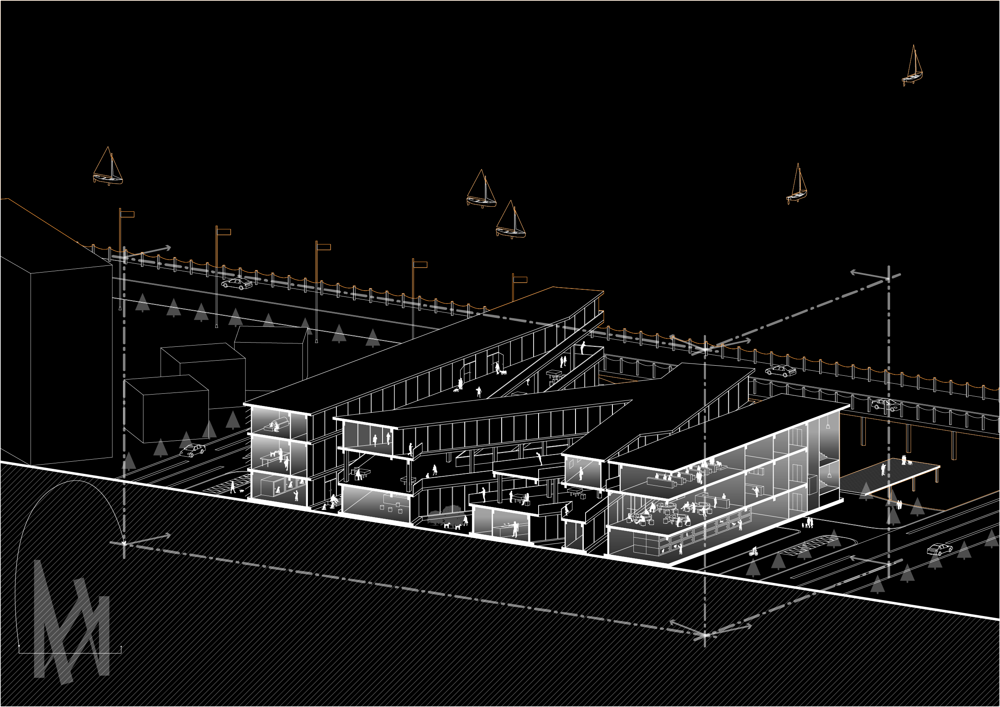

_role As the team leader, I and my teammates conducted 'product' research in the animal saving methods, and make a unique plan and design from the track of animals. I was in charge of the plan developing and also the technical engineering design.
- _duration 9/ 2015 - 11/ 2015.
- _course Architecture Design, Zhejiang University
- _partners Maggie Long, Yan Li, Siwei Su, Tao Lin (Tutor)
- _scope 'Product' Research, Architecture Design
_introducing
the purpose is not only to
build a shelter for animals to live
but also to facilitate adoption
by dialogue with the urban areas
Located on the bank of Qian Tang river in Hangzhou, which is away from the downtown area, the site can be defined as an ‘’Isolated island “. Based on the existed low-grade adoption, the location is undeniable add difficulty to the operation of animal shelter. Therefore, the purpose of design is to facilitate adoption by creating efficient dialogue with the urban area by building systematic relationship with the outside public.

so we decide to design this building
as we do on a product or service
_systematic analysis
first, use site analysis and program diagram
to understand the need of animal in spaces

city boundry
Harmonious society is not only the harmony between people but also about man and animals. Animals, just like humans, crave happiness and fear for death. With the acceleration of urbanization, the number of pets is increasing, and the number of stray animals is increasing at the same time. More and more stray animals have brought about a series of social, environmental and health problems. At present, only a part of the economically developed areas in China have government-set-up shelters. However, these institutions are often encountered operating crisis due to the low occupancy rate, difficulty on funds, lack of social concerns and other problems.Since the site is located on the edge of the city, away from the city center, there is no doubt that it increases the difficulty on the operation of the shelter.
program diagram
It reveals that most of the three streamline is organized linearly with a substantial intersection between each other, according to the analysis of the flow line. Thus, it is possible to create different kinds of space ,producing a variety of node effect ，and obtain the most convenient streamline organization mode by researching the form of the intersection of the three linear streamlines by means of typology.
inside realization
inner shape done,
then since we can't talk to animals directly
we still need to figure out what they need from where
outside eco-system
The goal of promoting animal shelter cannot be achieved through internal system design. Although the main users of animal shelter are the stray animals, the real operator is human being. Consequently, it is necessary for human beings to help them contact with external social organizations where the holding area, the medical district and the volunteer club will play important roles with.
instead of an elegant place to live in,
what we think as animals is to
make the service running in the shelter place
_plan
with public space in the intersection joints
the spaces are dynamic and fresh


_render showcase

The second floor of the building is released to the public as a Qiantang River sightseeing stand. Every year millions of visitors will be attracted by the Qian Tang River tide, therefore the sightseeing stand will attract huge crowds and potential customers for animal shelter. Walking on the trail, the sight will be effectively interacted with the hospitals on the third floor and the shelter space on the ground. Besides, the tide season, the public space is still a good choice for local residents to relax and take a walk.
we hope our in-and-out design
can help the public realize
every activity is a part of the social system,
shelters without considering about adoption
could only solve the problems on the surface

With the increasing number of stray animals, relying solely on the expansion of the size and number of shelters is no longer plausible to solve the problem. Seeming like provide a comfortable home for the stray, it is actually increase the social burden, as well as excuse for the animal abandoners. We propose to take adoption as the ultimate goal, aiming to promote virtuous circulation among human and resources, and it contributes to, and finally will, create a lasting and eternal wonderland for the stray animals.